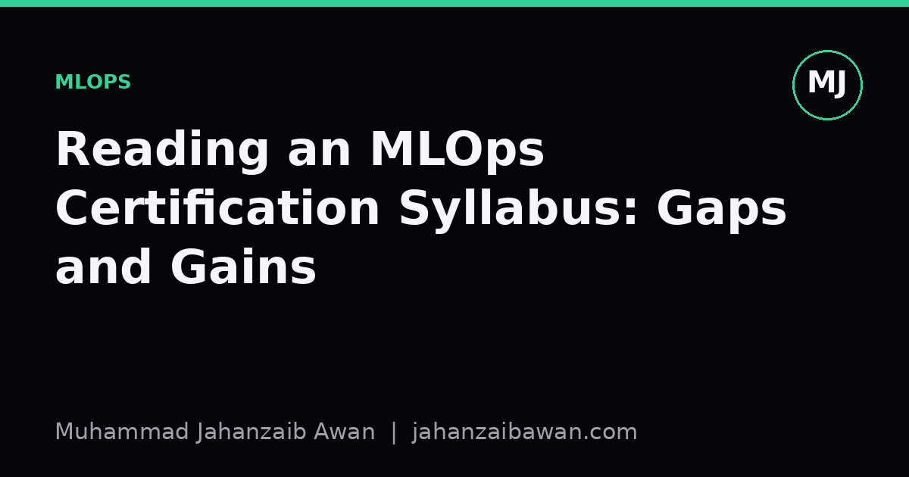

Reading an MLOps Certification Syllabus: Gaps and Gains
I went through a typical MLOps certification outline line by line to see what it actually prepares you for, and what it quietly leaves out.

Why the syllabus matters more than the badge
Certifications get dismissed quickly by people who already work in the field, and I understand the instinct. A badge on a profile does not tell you whether someone can debug a silently degrading model at two in the morning. But the syllabus behind the badge is a useful document in its own right, because it tells you what a whole industry has agreed is the baseline competency for running machine learning systems in production. Reading one closely is a good exercise even if you never sit the exam.
Most MLOps syllabuses I have looked at follow a similar shape. They start with version control for code and data, move through containerisation and orchestration, cover continuous integration and continuous delivery adapted for models, then finish with monitoring and retraining triggers. It is a sensible arc, and it maps neatly onto real job postings. The question worth asking is not whether this content is useful, it clearly is, but what kind of competence it produces and where that competence runs out.
What it teaches well: the plumbing
The strongest part of a typical syllabus is the plumbing. Packaging a model as a container image, wiring up a registry to track versions and stages, setting up a pipeline that retrains on a schedule or on a trigger, exposing predictions through an API with sensible latency and scaling behaviour: this is genuinely valuable and genuinely learnable in a structured course. It is also the part that transfers cleanly across domains. A pipeline that promotes a model from staging to production after passing automated checks looks much the same whether the model predicts churn or classifies images.
This plumbing knowledge closes a real gap. Plenty of people finish a machine learning course able to train a model in a notebook but with no idea how that model reaches a user. Knowing that a model artefact needs a version, a hash, and a record of the exact training data and code that produced it is not glamorous, but it is the difference between a reproducible system and a folder of pickled files nobody trusts six months later. A syllabus that drills this in has done something worthwhile.
Monitoring also gets reasonable coverage, at least at the level of naming the problem. Concept drift, data drift, latency degradation, these terms appear, usually with a diagram showing a dashboard and an alert threshold. Learners come away knowing that a model's performance can decay after deployment and that someone should be watching for it. That awareness alone is worth more than it sounds, because a surprising number of teams ship a model and never look at it again.

What it tends to skip: judgement
Where these syllabuses thin out is anywhere that requires judgement rather than procedure. Take the monitoring dashboard again. The syllabus tells you drift matters and shows you a chart of a distribution shifting over time. What it rarely teaches is how to decide whether an observed shift is the kind that should trigger retraining or the kind that reflects a genuine change in the population you are modelling, one that a naive retrain would just relearn incorrectly. If a fraud model's flagged transaction rate rises from three percent to five percent in a month, that could be drift worth acting on, or it could be a new product line legitimately generating more edge cases. Distinguishing those requires domain knowledge and a conversation with people outside the ML team, not a pipeline step.
Data leakage barely features, and when it does it is treated as a training-time footnote rather than an operational risk. In production, leakage often creeps back in through the monitoring and retraining loop itself. Imagine a pipeline that automatically retrains weekly on the latest labelled data, where labels for a subscription cancellation model arrive up to sixty days after the prediction was made. If the retraining job naively pulls all data available today, it will include rows where the label was only just recorded but the features were captured much later than the original prediction point, quietly leaking future information into a model that is supposed to predict the future. A syllabus focused on orchestration mechanics will tell you how to schedule that job. It will not tell you to check whether the feature computation window respects the same cutoff the label depends on.
Evaluation design is the other quiet gap. Certifications generally teach you to log accuracy or an equivalent metric to a dashboard and set a threshold for alerting. They rarely push on whether that single aggregate number hides a serious problem in a minority subgroup, or whether the offline test set used to validate a new model version was built with a split that respects time and grouping. A model that scores well on a random train test split of loan applications might still perform badly in production if applications from the same household appeared in both the training and test partitions, because the split ignored a natural grouping key. That is a leakage failure hiding behind a passing metric, and no amount of container orchestration knowledge catches it.
A practical takeaway
None of this means the certification is a waste of time. Learning the plumbing is genuinely necessary, and having a shared vocabulary for pipelines, registries, and monitoring makes it easier to work on a team. The mistake is treating the certificate as evidence of finished competence rather than as one half of the job.
The other half has to come from deliberate practice with messier questions: how to construct an evaluation split that respects time, groups, and label availability delays; how to distinguish meaningful drift from noise; how to trace a leakage bug back through a retraining pipeline rather than assuming the pipeline itself guarantees correctness. These skills do not fit neatly into a multiple choice exam because they depend on the specifics of the data and the business, but they are exactly the skills that separate a system that quietly fails from one that keeps working. If you are studying one of these syllabuses, treat it as a checklist for infrastructure literacy, then go looking elsewhere for the judgement that infrastructure alone cannot teach you.